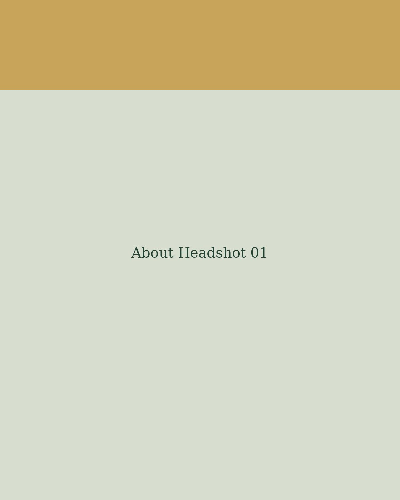

About
Sophia Dawson is a New York and Los Angeles trained actor and multifaceted creative passionate about exploring vulnerability, connection, and truth through artistic expression. She studied at The American Academy of Dramatic Arts and UCLA’s Professional Acting Program, where she refined her craft and discovered her voice as a dynamic storyteller. Sophia brings depth, authenticity, and versatility to her work across acting, poetry, writing, visual art, and beyond. As a company member at Will Geer’s Theatricum Botanicum and the author of her debut poetry collection, The Waltz of the Moonflower, she is committed to developing original, layered narratives that reflect the beauty and complexity of the human experience. Guided by empathy and creative curiosity, she approaches each project with a deep belief in the power of art to move, connect, and transform.